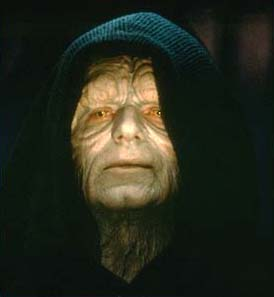
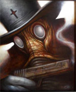

Forums galactiques > Taverne galactique : lieu de discussion informel > Recensement des coalitions
Pages : 1 2
| Dr.Jackail Réputation à la taverne : 3  31/03 ETU 15:34 | Score : 4 Détails Afin que les nouveau arrivant ne soit pas trop perdus, je propose la création d'une liste des coalitions.
Toute nouvelle coalition devras venir y inscrire son nom en rouge et toute coalition dissoute devra venir barrer le sien. Voici donc le début: -Les suisses -Big Red One -Planitia -La JOPP -Blackbow warrior -Le sphinx blanc | ||
| intox31 Réputation à la taverne : 0  31/03 ETU 16:15 | Score : 0 Détails Peut on aussi (pour les nouveaux arrivants commes moi)expliquer les capacités et objectifs de chacunes de ces coalitions?
Un tout nouveau commandant... | ||
| Guillaume Tell Réputation à la taverne : 344  31/03 ETU 17:11 | Score : 0 Détails -Les suisses
-Big Red One -Planitia -La JOPP -Blackbow warrior -Le sphinx blanc - La Légion des Glyphes | ||
| murphi Réputation à la taverne : 134  31/03 ETU 17:25 | Score : 0 Détails -Les suisses
-Big Red One -Planitia -La JOPP -Blackbow warrior -Le sphinx blanc -La Légion des Glyphes -L'Empire du Lion d'Or: L'Empire du Lion d'Or est une coalition vouant ses efforts à l'amélioration de la civilisation humaine. | ||
| Deepsnow Réputation à la taverne : 62  31/03 ETU 18:27 | Score : 3 Détails L'idée est bonne mais peut largement être améliorée.
Je vous fais une proposition: Nom de la coalition (recrute(pas)) Objectif:... Qui contacter:... Exemple: JOPP (Recrute) Objectifs: Accueillir les jeunes commandants ayant pour objectifs d'intégrer Planitia je peux me tromper.... Qui contacter?: Eowei Je pense que présenté comme cela, les jeunes auront plus de facilités à choisir une coalition à leur goûts et saurons de même qui contacter. | ||
| Glokzy Zounourss Réputation à la taverne : 228  31/03 ETU 22:33 | Score : 2 Détails Nom de la coalition : O.R.I.G.I.N.E.
Objectif: Casser la gueule aux corrupteurs !! Niark! Qui contacter: Gras-Boeuf. Le recrutement se fait sur demande et après analyse. | ||
| Shiranui Réputation à la taverne : 227  01/04 ETU 18:23  | Score : 0 Détails Nom de la coalition: Le Sphinx Blanc (Recrute)
Objectif: Venir en aide aux jeunes commandants. Voir une Origine stable, unie et puissante. Contacts: Moi-même (Shiranui), Cassandra, Captn ou Solmyr. Ceci dit, Agréable journée à tous. | ||
| Lotto Réputation à la taverne : 46  01/04 ETU 18:30 | Score : 3 Détails Curieux,je ne trouve pas trace du Commandant 'Moi-même' dans les registres galactiques...
| ||
| Shiranui Réputation à la taverne : 227 01/04 ETU 18:44 | Score : 0 Détails Si le Doc Jackail autorise les interventions inutiles, je me permets alors d'en faire une...
"Oui... Nous regardons tous en l'air,les yeux bien ouverts,pour voir voler nos rêves,après tout." C'est de vous, n'est-ce pas ? Alors si vous ouvriez vraiment bien vos yeux, vous sauriez qui est ce fameux 'Moi-même'... | ||
| Glokzy Zounourss Réputation à la taverne : 228 01/04 ETU 18:55 | Score : 3 Détails Hum... C'était nul.
| ||
| Dr.Jackail Réputation à la taverne : 3 01/04 ETU 21:07 | Score : 3 Détails Comme la dit le commandant shiranui je préférerais que les commentaires inutiles (dont le roi me semble glorky zounours car il a fait très fort : un commantaires inutiles sur un commantaires inutile...j'aplaudis le talent...) restent limités au topics concernés ( Izakaya, etc...)
| ||
| Glokzy Zounourss Réputation à la taverne : 228 01/04 ETU 22:05 | Score : 0 Détails L'Izakaya n'est pas un lieu fait pour dire des conneries. Enfin, pas uniquement. Néanmoins, nous voilà ex-aequo sur le domaine des commentaires inutiles doc'!
| ||
| captn Réputation à la taverne : 65  04/04 ETU 22:06 | Score : 1 Détails Une petite question: Pourrions nous revenir a notre sujet de départ ?
| ||
| Gorgutz Réputation à la taverne : 119  13/04 ETU 12:47 | Score : 0 Détails "Okay les boyz"
J'aimerai faire partie de la coalition du nom de 'Blackbow warrior'. Alors pour ça, j'ai besoin de votre aide. Pourriez vous me dire qui est le directeur de cette coa ? Merci d'avance Gorgutz | ||
| Jack Réputation à la taverne : 64  13/04 ETU 13:03 | Score : 0 Détails Nom de la coalition:Les Aigles De L'enfer.
Nos Buts:Faire que notre galaxie(Origine pour les intime)soit juste,plus clairement nous sommes une sortes de modeste justiciers. Contactes qui?Moi memeJe ne me souviens plus du prénom exacte) | ||
| Docteur Z Réputation à la taverne : 0  13/04 ETU 13:19 | Score : 0 Détails Commandant Jack..........schruf!
Es ce que je peux faire partie de votre Coalition?........schruf! Merci d'avance.........schruf! Docteur Z............schruf! ps:envoyez moi votre réponse par mp!........shruf! | ||
| Vaeddan Réputation à la taverne : 98  13/04 ETU 14:09 | Score : 0 Détails Nom de la coalition:BlackBow Warriors
n'écorchez pas son nom Svp. Objectifs: Former les jeunes au RP et à la vie galactique. Qui contacter: Moi Merci de votre compréhension. | ||
| Alnia Réputation à la taverne : 19  13/04 ETU 15:11 | Score : 1 Détails O-R-I-G-I-N-E, en voilà une belle coalition qui n'existe plus...
Désormais, adressez vous à moi pour entrer dans la coalition Renouveau Nos buts ? Pour le moment, nous en décidons ensemble, mais croyez moi, ils seront sans doutes moins amicaux que ceux de Grabeuh... | ||
| skeletal Réputation à la taverne : 2  13/04 ETU 17:25 | Score : 0 Détails nom de la coalition: Les aides aux commandants
objectifs:Aider tous les commandant qui le souhaite en intégrant la coalition,la coalition sera sous un régime politique démocratique qui contacter:skeletal | ||
| Saedon Réputation à la taverne : 106  13/04 ETU 17:54 | Score : 0 Détails Nom de la coalition:
Mythrra Objectifs: -Mithra est une idéologie et non un parti politique. Les objectifs de Mithra sont : -Faire prendre conscience aux comandants de la galaxie de toutes les lois qu'ils se sont imposé au fur et à mesure du temps.Autrement dit ,faire évoluer les commandants Originaires. -Faire en sorte que la raison gouverne au lieu d'un seul parti ou d'un seul homme. Qui contacter: Saedon ,Rudrig del Fortuna ou N'Tyrr |
Pages : 1 2
Forums galactiques > Taverne galactique : lieu de discussion informel > Recensement des coalitions